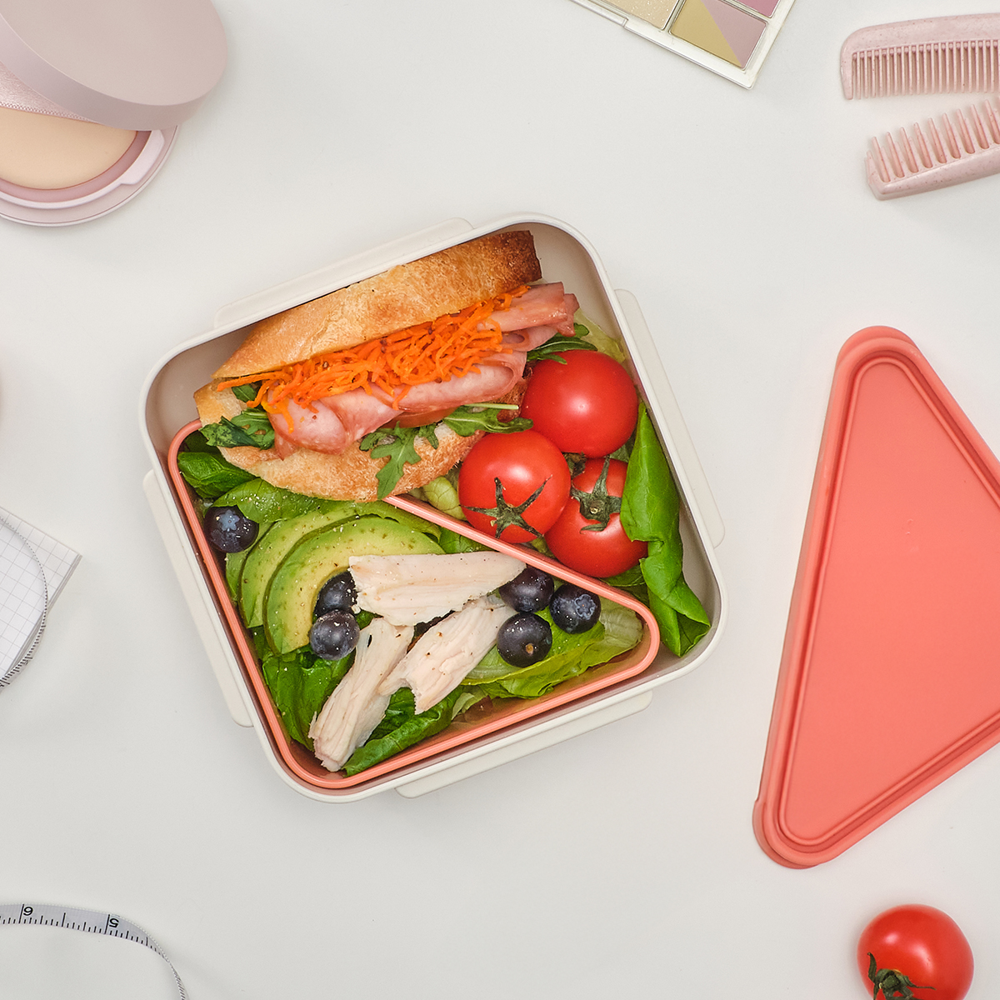
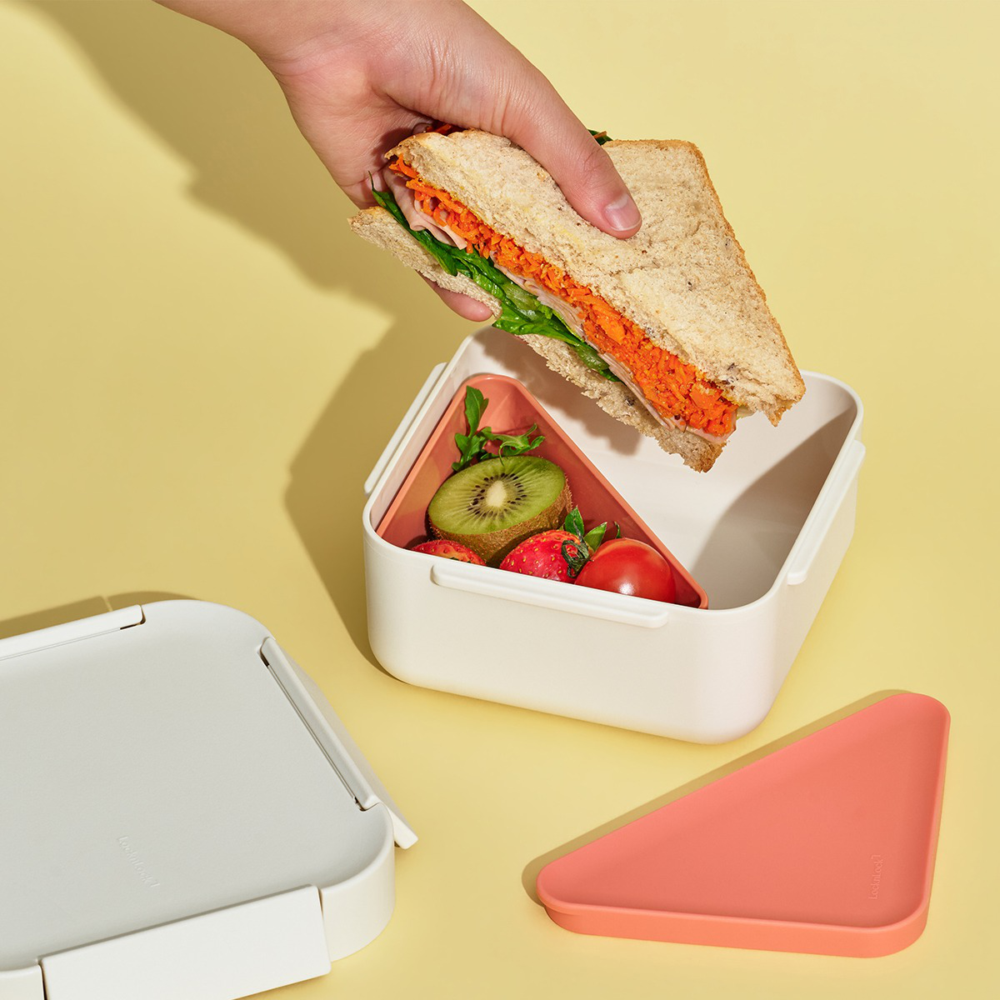
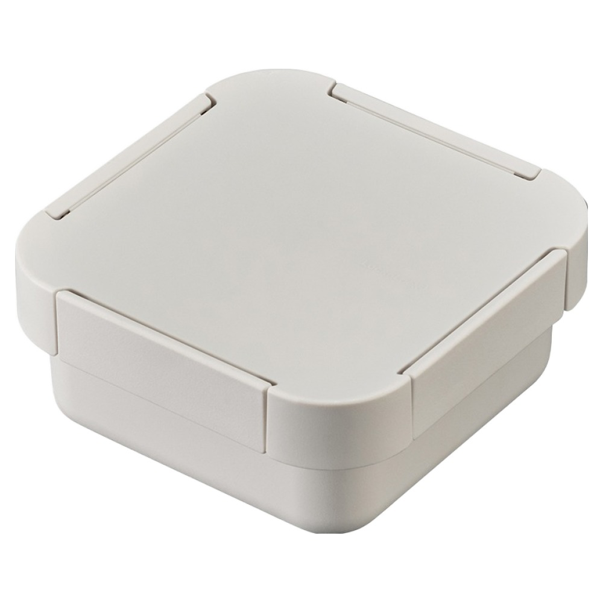
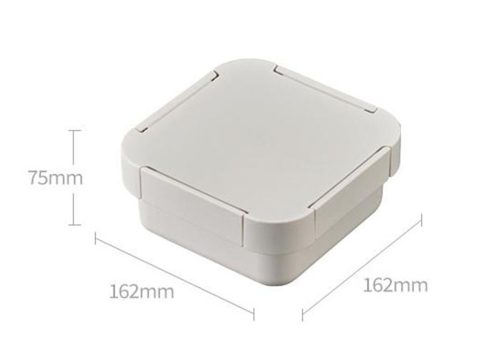

한 통에 같이 담으면
서로 닿지 않았으면 하는 음식도 결국 한 공간에 놓입니다.
LOCKnLOCK TO-GO 920ml
아침에는 따로 담았는데, 점심이면 샌드위치와 샐러드가 한데 섞여 있나요?
뚜껑이 있는 분리 용기로 서로 닿지 않았으면 하는 메뉴를 한 통 안에 나눠 담고, 네 방향 결착 날개로 도시락 뚜껑을 고정하세요.
920ml 한 통 안을, 오늘 메뉴에 맞게 나눠 쓰세요.

920ml 분리 용기와 전용 뚜껑 4면 결착
쿠팡에서 옵션과 가격 확인하기이 포스팅은 쿠팡 파트너스 활동의 일환으로, 이에 따른 일정액의 수수료를 제공받습니다.
쿠팡 상품 페이지에서 최신 옵션과 가격을 확인한 뒤 결정하세요.
점심시간, 이런 적 있나요?
샐러드 물기는 빵에 닿고, 과일은 빈틈으로 굴러갑니다.
서로 닿지 않았으면 하는 음식도 결국 한 공간에 놓입니다.
가방은 금세 꽉 차고, 집에 돌아와 씻어야 할 것만 늘어납니다.
도시락은 하나만 챙기고,
음식은 안에서 나눠 담아보세요.
SOLUTION
920ml 정사각 본체 안에 분리 용기를 끼우고, 그 위에 전용 뚜껑을 덮습니다. 큰 메뉴와 따로 두고 싶은 작은 메뉴를 한 통 안에서 나눠 담는 방식입니다.
도시락은 하나로, 메뉴의 자리는 나눠서.

외부 뚜껑, 분리 용기와 전용 뚜껑, 920ml 본체로 구성됩니다.
샌드위치나 샐러드처럼 부피가 큰 메뉴를 정사각 본체에 담습니다.
과일이나 토핑처럼 다른 메뉴와 닿지 않았으면 하는 음식은 분리 용기에 담고 전용 뚜껑을 덮습니다.

외부 뚜껑을 맞춘 뒤 네 방향의 결착 날개를 차례로 눌러 고정합니다.
그날 메뉴에 맞춰,
분리 용기를 넣거나 빼서 사용하세요.
CHECK THE FACTS
후기보다 먼저 내 가방과 식사량에 맞는지 확인할 수 있도록, 상세페이지에서 확인된 정보만 모았습니다.

식기세척기는 80℃ 미만 상단, 전자레인지는 700W 기준 2분 이내 사용을 권장합니다.
BEFORE YOU BUY
궁금한 질문을 열어 제품 크기와 사용 조건을 확인할 수 있습니다.
제품 외경은 162 × 162 × 75mm입니다. 가방의 겉치수보다 실제 수납 칸의 가로·세로·높이를 재고 비교해 주세요.
사용할 수 있지만 조건이 있습니다. 전자레인지는 빈 용기를 넣지 말고 뚜껑을 연 상태에서 데우는 용도로만 사용하세요. 상세페이지는 가정용 700W 기준, 유분이 없는 음식의 2분 이내 사용을 권장합니다. 식기세척기는 80℃ 미만에서 상단 사용을 권장합니다.
사용 조건 이미지 다시 보기4면 결착 뚜껑과 실리콘 패킹 구조는 확인됐지만, 현재 자료에는 기울이거나 흔드는 누수 시험 결과가 없습니다. 내부 분리 용기도 완전 밀폐 사양이 아니라고 안내되어 있습니다. 국물은 세운 상태로 휴대하고, 누수 여부가 중요한 용도라면 구매 전에 판매자에게 운반 조건을 확인해 주세요.
READY FOR LUNCH?
락앤락 투고 정사각 런치박스 920ml로 큰 메뉴와 따로 두고 싶은 메뉴를 한 통 안에 나눠 챙겨보세요.
이 포스팅은 쿠팡 파트너스 활동의 일환으로, 이에 따른 일정액의 수수료를 제공받습니다.
이 페이지에서는 결제되지 않습니다. 쿠팡에서 옵션·가격·배송·반품 조건을 확인한 뒤 결정하세요.